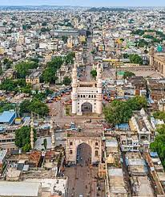
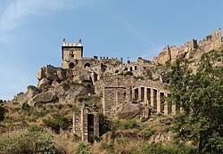
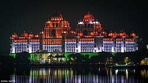

Famous Places
Here are some must-see places in Hyderabad
Charminar
An iconic monument and mosque built in 1591; it remains one of Hyderabad's most recognized landmarks.
Golconda Fort
A historic fortress with panoramic views of the city and a rich history tied to the diamond trade.
Hussain Sagar
A large lake with the famous Buddha Statue; a popular recreational spot with promenades and parks.

Telangana Secretariat
The Dr.B.R.Ambedkar Telangana State Secretariat is one of the most stunning governmnet buildings in India. It;s night illumination has become a major attraction in Hyderabad.
